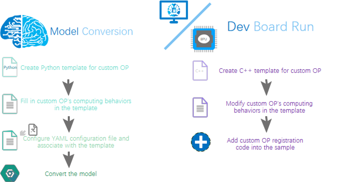

5. Custom OP Development
5.1. General Descriptions
In most cases, your models should be able to be deployed into Horizon’s ASICs because the AI Toolchain has provided rich OPs. But if you find that there are unsupported OP(s) in the models, it is suggested to try to replace the unsupported OP(s) with those supported ones, so as to utilize Horizon’s ASIC capacities to the full.
The custom OP provides the ability to allow an customized operator to be computed in CPU. The complete custom OP development process should include: template creation, OP implementation, OP compilation, conversion of a custom OP included model and execution of a custom OP included model. Please refer to below frame diagram:
As above shown, it takes 2 stages to define a custom OP: at model conversion stage, there must be the Python code of the custom OP; at simulator/dev board inference stage, there must be the custom OP and its C++ code. In addition, computation the codes in 2 stages must be consistent.
5.2. Custom OP Included Model Conversion
5.2.1. Modify Model File
When the custom OP’s implementation is ready, to run the custom OP, you need to modify both the original model file and
the configuration file for model conversion (Take the Caffe model and the ONNX model as examples respectively below):
In the original model file, change the OP type mark of corresponding custom OP into Custom and fill in a custom_param
group as shown below:
Caffe Model
In the original model file, the operator type corresponding to the custom operator is marked as Custom, and a set of custom_param is provided. The example is as follows.
layer {
name: "hr_op"
type: "Custom"
bottom: "res3d_in"
top: "res3d"
custom_param {
kind: "CustomIdentity"
shape {
dim: 1
dim: 512
dim: 28
dim: 28
}
params: "'kernel_size': 10 \n'threshold': 0.5"
}
}
In the above custom_param set example, the kind refers to the name of costum OP’s internal implementation,
as the custom OP is an identical OP, it is named as CustomIdentity. This name will be shown in the succeeding
Python and C++ codes. The shape refers to OP’s output size and needs to be completely specified. The params
refers to OP’s incoming parameters and it should be specified like this: 'param_name': param_value. Note that
multiple parameters should be separated using \n.
While in the configuration file for model conversion, a new custom OP parameter must be added into the file as shown below:
#...
custom_op:
# custom OP's calibration method
custom_op_method: register
# custom OP's implementing file, multiple files should be separated using ";"
op_register_files: sample_custom.py
# the folder in which the custom OP's implementing file is kept, please use relevant path
custom_op_dir: ./custom_op
Among the above parameter set, all 3 parameters must be configured.
custom_op_method should be specified as register.
op_register_files refers to the file in which implement custom OP compute,
if there are multiple implementations, use ‘;’ to separate files.
custom_op_dir refers to the path name to save op_register_files files, please use relevant path.
When all configurations are done, the succeeding model conversion steps are the same as the other ordinary models.
ONNX Model
Obtaining the Onnx model with custom operators:
Converted from other frameworks such as pytorch
Reference Code:
import torch from horizon_nn.horizon_onnx.onnx_pb import TensorProto from torch.onnx.symbolic_helper import parse_args from torch.onnx.utils import register_custom_op_symbolic from torch import Tensor model = torch.hub.load('pytorch/vision:v0.10.0', 'googlenet', pretrained=True) def _transform_input(x: Tensor) -> Tensor: return x model._transform_input = _transform_input @parse_args("v", "v") def horizon_pool(g, input, output_size): return g.op( 'horizon.custom::PyOp', #required, ! must be 'horizon.custom' domain ! input, class_name_s="GlobalAveragePool", #required ! must match the class def name in sample_custom python file ! compute_s="compute", #optional, 'compute' by default module_s="sample_custom", #required ! must match the file name of the "op_register_files" ! input_types_i=[TensorProto.FLOAT], #required output_types_i=[TensorProto.FLOAT], #required output_shape_s=["1, 1024, 1, 1"]) #required d_input = torch.rand(1, 3, 224, 224) register_custom_op_symbolic('::adaptive_avg_pool2d', horizon_pool, opset_version=11) torch.onnx.export(model, d_input, "googlenet_cop.onnx", opset_version=11)
Modify the onnx model directly
Reference Code:
from horizon_nn import horizon_onnx from horizon_nn.horizon_onnx import helper from horizon_nn.horizon_onnx.onnx_pb import TensorProto model = horizon_onnx.load("googlenet.onnx") # print(helper.printable_graph(model.graph)) py1_node = helper.make_node( op_type='PyOp', #required, must be 'PyOp' name='hr_op', #required inputs=['368'], #required outputs=['368_py'], #required domain='horizon.custom', #required, ! must be 'horizon.custom' domain ! input_types=[TensorProto.FLOAT], #required output_types=[TensorProto.FLOAT], #required module='sample_custom', #required, ! must match the file name of the "op_register_files" ! class_name='CustomIdentity', #required ! must match the class def name in sample_custom python file ! compute='compute', #optional, 'compute' by default kernel_size='10', #optional, threshold='1.2') #optional, custom_index = -1 for node_index in range(len(model.graph.node)): if model.graph.node[node_index].name == "Conv_4": # insert pyop at certain point in the original model model.graph.node[node_index].input[0] = "368_py" custom_index = node_index if custom_index == -1: raise ValueError(f"target node not found") model.graph.node.insert(custom_index, py1_node) pyop_value_info = helper.make_tensor_value_info("368_py", TensorProto.FLOAT, # value info is needed for onnx shape infer. [1, 64, 56, 56]) model.graph.value_info.append(pyop_value_info) pyop_opset = helper.make_operatorsetid("horizon.custom", 1) model.opset_import.append(pyop_opset) horizon_onnx.save(model, "modified.onnx")
Attention
Points to note about the PyOp attributes in the Onnx model:
The domain attribute must be set, otherwise it will be defaulted to the onnx standard domain and an error will be reported
The module needs to have the same name as the registration file used during registration. If the registration file is in a subfolder of the current directory, you need to modify the content of the module. For example: If
sample_custom.pyis in the custom_op folder of the current path, the module should Set tocustom_op.sample_customclass_name needs to be the same as the class name in the registration file
Consistent with the
Caffemodel, you need to add a new custom op parameter group to the configuration file to use a custom operator in the model conversion configuration as follows:
#...
custom_op:
# Customize the calibration method of op
custom_op_method: register
# Custom OP's implementation file, multiple files can be separated by ";"
op_register_files: sample_custom.py
For the ONNX model, both parameters in the above parameter group must be configured. custom_op_method always uses register;
op_register_files is the implementation file of custom operator calculation. If there are multiple implementations, use ‘;’ to separate each file;
After completing these configurations, the subsequent steps of model conversion are consistent with other general model conversion processes.
5.3. OP Implementation
At model coversion stage, the Python implementation of custom OP is required. The tool will use the implementation function to convert floating-point models into fixed-point models.
A Python template file (sample_custom.py) is shown as follows:
import numpy as np
from horizon_nn.custom.op_registration import op_implement_register, op_shape_infer_register
@op_implement_register("Sample")
class Sample(object):
def __init__(self, kernel_size, threshold):
self._kernel_size = kernel_size
self._default_threshold = threshold
def compute(self, X):
return X
@op_shape_infer_register("Sample")
def infer_shape(inputs_shape):
"""Infer the output shapes of the custom operator.
Arguments:
input_shapes: A list of input shapes.
Returns:
Return a list of custom operator's output shapes.
"""
outputs_shape = inputs_shape
return outputs_shape
The filename (sample_custom.py) must be filled into the op_register_files in YAML configuration file,
otherwise the tool will not be able to import this module;
the op_implement_register modifier registered custom op name， i.e. CustomIdentity must be the same
with the kind of custom OP.
For the Caffe model, the (kernel_size, threshold) parameters of the init function are passed in from the params in prototxt file,
they are used for initiating the custom OP module.The OP shape doesn’t need to be registered (op_shape_infer_register) if it has been described in the prototxt file.
The op_shape_infer_register registered function will only be called when there isn’t shape information in prototxt.
Model conversion can be executed to get the BIN file when all abovementioned operations are done.（I.e. hb_mapper makertbin command ）
5.4. Run Custom OP on Dev Board
Before running the conversion obtained BIN model, it is required to provided costum OP’s C++ implementing code. You can simply modify below template file.
You can also use the template file to test the custom OP feature. As the input values are assigned as output values, the custom OP in template file won’t affect results.
5.4.1. A C++ Template of Custom OP
Runtime template file is shown as follows:
// custom_identity.h
#ifndef ADVANCED_SAMPLES_CUSTOM_IDENTITY_H_
#define ADVANCED_SAMPLES_CUSTOM_IDENTITY_H_
#include <string>
#include <vector>
#include "dnn/hb_dnn.h"
#include "dnn/plugin/hb_dnn_layer.h"
#include "dnn/plugin/hb_dnn_ndarray.h"
namespace hobot {
namespace dnn {
Layer *CustomIdentity_layer_creator();
class CustomIdentity : public Layer {
public:
CustomIdentity() = default;
~CustomIdentity() override = default;
public:
int32_t Init(const Attribute &attributes) override;
int32_t Forward(const std::vector<NDArray *> &bottomBlobs,
std::vector<NDArray *> &topBlobs,
const hbDNNInferCtrlParam *inferCtrlParam) override;
std::string GetType() const override { return "CustomIdentity"; }
private:
std::string module_;
};
} // namespace dnn
} // namespace hobot
#endif
// custom_identity.cpp
#include "custom_identity.h"
namespace hobot {
namespace dnn {
Layer *CustomIdentity_layer_creator() { return new CustomIdentity; }
int32_t CustomIdentity::Init(const Attribute &attributes) {
// unused attribute, just demonstrating
attributes.GetAttributeValue(&module_, "module");
return 0;
}
int32_t CustomIdentity::Forward(const std::vector<NDArray *> &bottomBlobs,
std::vector<NDArray *> &topBlobs,
const hbDNNInferCtrlParam *inferCtrlParam) {
const NDArray *input = bottomBlobs[0];
NDArray *out = topBlobs[0];
const auto *input_data = input->Dptr<float>();
auto *out_data = out->Dptr<float>();
uint32_t size = input->Size();
for (uint32_t i = 0U; i < size; i++) {
out_data[i] = input_data[i];
}
return 0;
}
} // namespace dnn
} // namespace hobot
Note
The prefix of function name (i.e. CustomIdentity) must be the same with comstum OP Type (kind).
The incoming parameters are:
bottom_blobs→ Input data of custom OP node.top_blobs→ Output data of custom OP node.inferCtrlParam→ Initializing incoming paramter of custom OP.
Attention
In the template file, output values should equal to input values. Therefore, if users need to define other behaviors, operational rules must be modfied accordingly.
5.4.2. Custom OP Registration
When you finish modifying C++ template file, you will only need to add descriptions of the template file into the CMakeLists.txt and add custom OP registration in sample. Please refer to below code block:
#include "custom_identity.h"
hbDNNRegisterLayerCreator("CustomIdentity",
hobot::dnn::CustomIdentity_layer_creator);
....
You will be able to execute those models who contain custom OPs after adding custom OP dependency information and custom OP registration.
Attention
Before using the custom OP, please confirm that the name of model’s custom OP is the same with the registered custom OP name.
For reference documentation, please refer to advanced_samples in the Runtime sample 。